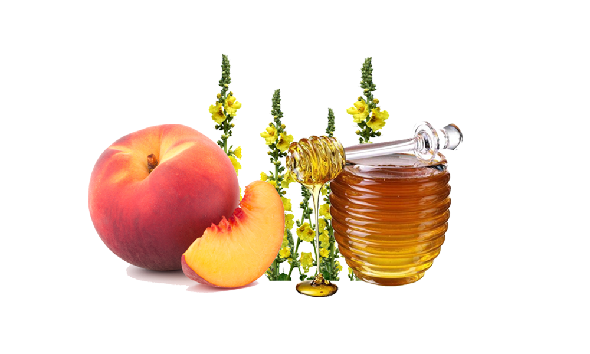
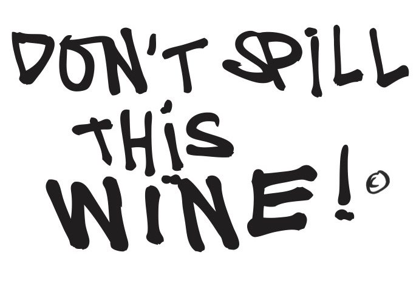

Rock ‘n Rolle Classic is a delicious wine that is not to be sneezed at! Brought to you from a century-old Mediterranean terroir around the south of the French Mediterranean area, this delicious blend of juicy grapes is noteworthy for its beautiful, fresh acidity. The wine is smooth and open with a little “crispy” bitterness of the Rolle grape and featuring aromas of ripe peaches, wildflowers, and just a drop of honey.
Grenache Blanc – Terret – Rolle (Vermentino) – Sauvignon Blanc
Pays d’Oc IGP
 